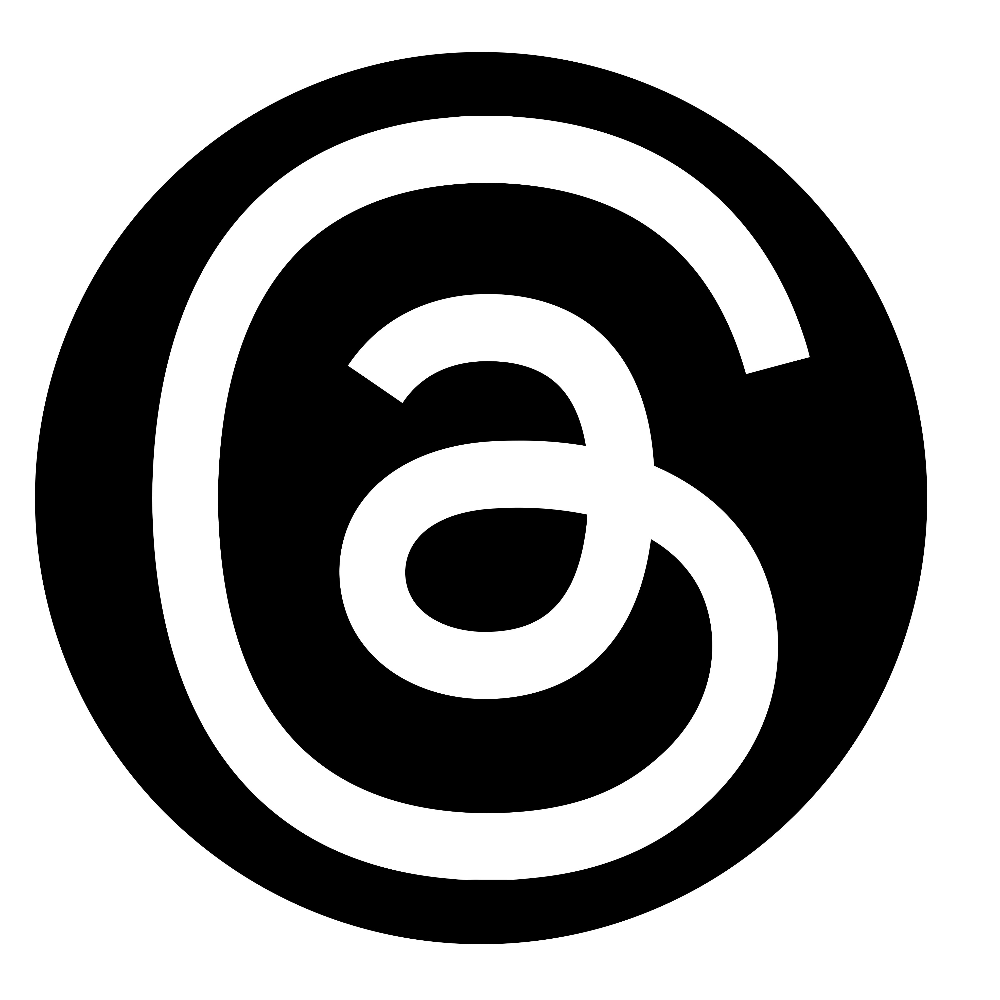
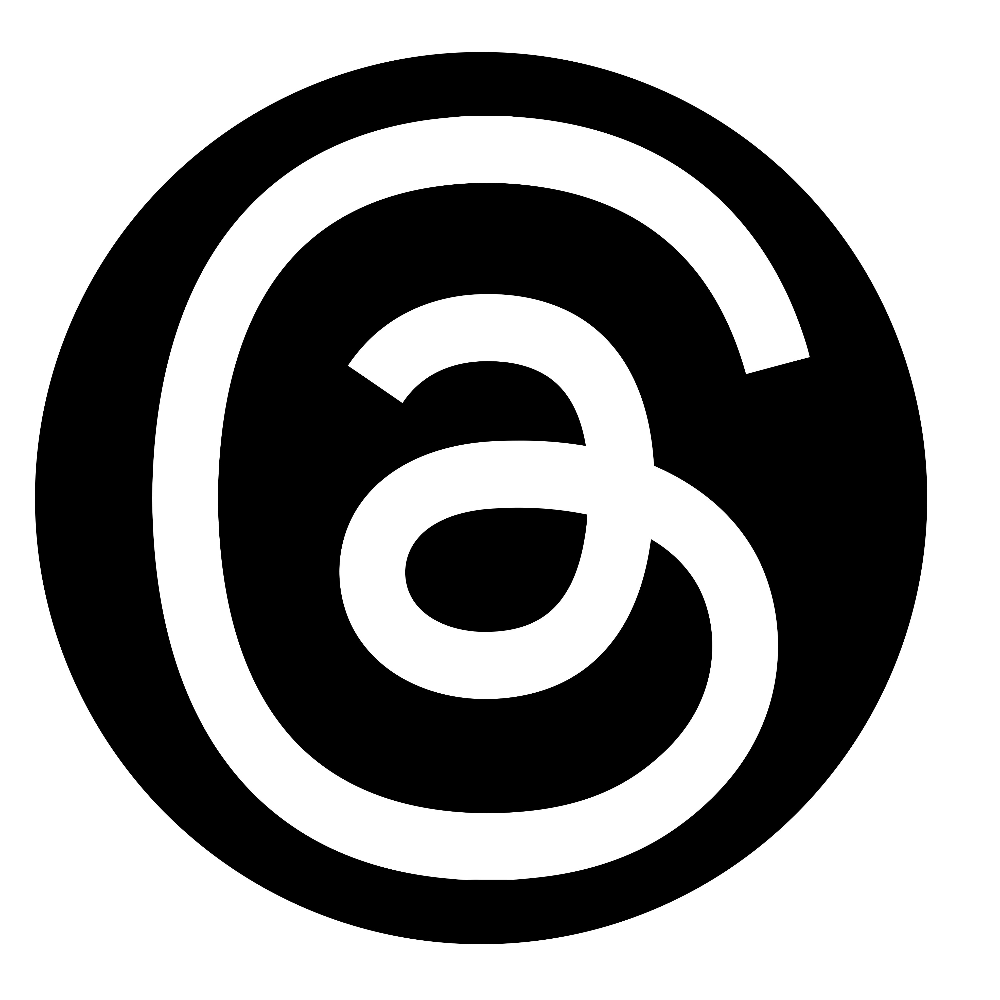

|
 |
 |
 |
 |
|---|---|---|---|---|
| A Romanos Sarantidis production ®️ Feel free to suggest any corrections or mistakes. | ||||

| HOME | EUROVISION MAP |
|---|
OUR 2024 WINNER IS NEMO WITH THE CODE (SWITZERLAND)
Switzerland has won the 68th Eurovision Song Contest with the song 'The Code' performed by Nemo.
All votes had been received, counted and verified, and Petra Mede and Malin Åkerman had the honour of announcing the winner of the Eurovision Song Contest 2024.
Live from Malmö Arena, we watched as the coveted Eurovision trophy was handed from Sweden over to Switzerland. The winning song is The Code, performed by Nemo.
After the very last set of scores had come in, The Code was announced as the clear champion with a points tally of 591 and a lead of 44 points.
Croatia finished in second place with Rim Tim Tagi Dim by Baby Lasagna on 547 points. The other spot on the podium finish went to Ukraine, ending up in third place thanks to alyona alyona & Jerry Heil with their song Teresa & Maria, on 453 points.
Scores on the night were awarded in two stages, as is traditional at the Eurovision Song Contest. The first results to come in were from the juries, followed by the reveal of the public vote.
Once the initial points from 37 juries had come in, Switzerland had amassed an almighty lead on the scoreboard with 365 points. Of the 36 sets of top 'douze points' available to Switzerland, The Code was awarded an impressive 22 of them. This helped put the Swiss in the lead by 147 points, with France behind them in second place, with 218 points.
The 226 points that the public vote then awarded Switzerland was enough for Nemo to maintain that lead and cross the line into that final victory. The Code becomes the 68th winner of the Eurovision Song Contest.
Nemo's triumph in Malmö is Switzerland's third win at the Eurovision Song Contest to date, following victory by Lys Assia in 1956 and Céline Dion in 1988.
Switzerland first participated in the Eurovision Song Contest in 1956, winning the very first edition of the competition, which it also hosted.
The country has only missed the contest in 1995, 1999, 2001 and 2003 due to poor results in previous years, which according to the rules at the time, meant relegation from the Contest.
In the 21st century, Nemo's result is only the 4th time that Switzerland has finished inside the Top 10 in a Grand Final.
Born in 1999 in Biel, a small bilingual town in Switzerland, Nemo has been playing the violin, piano and drums since they were a small child.
In 2016, Nemo became famous overnight through an appearance at SRF Virus (#Cypher), which went viral on social media. Afterwards they released two EPs - through which 7 songs made it directly onto the official Swiss Singles Chart.
2020 marked the beginning of a period of change for Nemo, when they started writing and producing for other artists, and also started releasing songs in English.
In their music, Nemo deals with themes such as gender identity, mental health and finding one‘s place in this world.
|
|
|
|
 |
|---|---|---|---|---|
| A Romanos Sarantidis production ®️ Feel free to suggest any corrections or mistakes. | ||||